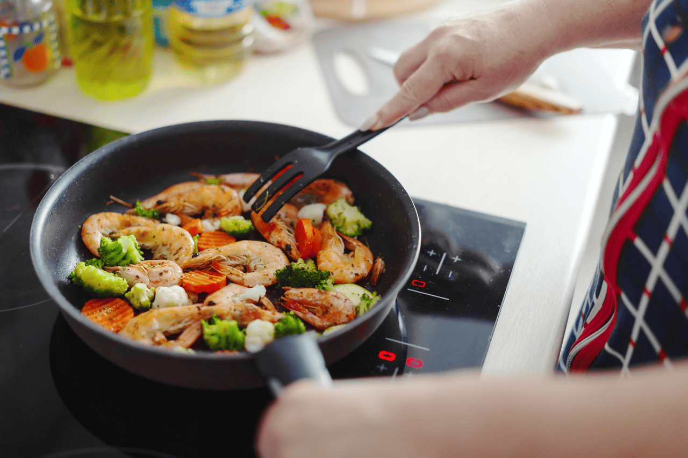
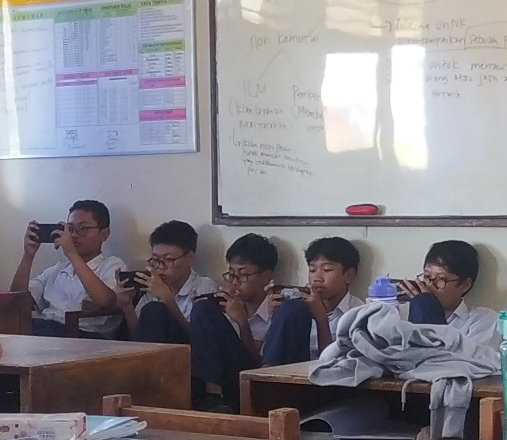

Cornelius
Teofan
Carmano
🌐Personal Web🌐

Home

Article

Gallery
Profile

 Guestbook
Guestbook
Cornelius |
Home |
Article |
Gallery |
Profile |
|
|---|---|---|---|---|---|
|
Guestbook
|
|||||
 MEMASAK |
Hobi memasak itu seru karena saya bisa mencoba berbagai resep dan
menciptakan makanan sesuai keinginan sendiri. Selain itu,
memasak juga melatih kreativitas,
menambah keterampilan, dan memberikan kepuasan tersendiri ketika makanan yang dibuat berhasil dan
rasanya enak. Saya juga senang karena bisa bereksperimen dengan berbagai bahan makanan, bumbu, serta cara memasak yang berbeda-beda. Dari kegiatan memasak, saya dapat belajar mengolah bahan sederhana menjadi makanan yang lezat dan menarik. Terkadang, saya juga mencoba memodifikasi resep yang sudah ada agar menghasilkan cita rasa yang berbeda. |
 BERMAIN |
Saya juga suka bermain game karena terkadang bermain game menjadi salah satu cara bagi saya untuk keluar sejenak dari rutinitas dan realita kehidupan sehari-hari. Ketika bermain game, saya bisa merasa lebih tenang, menikmati waktu luang, dan menghilangkan rasa bosan setelah melakukan berbagai aktivitas. Selain itu, bermain game juga memberikan hiburan tersendiri bagi saya, terutama ketika berhasil menyelesaikan suatu misi, memenangkan pertandingan, atau mencapai sesuatu di dalam permainan. Saya sudah mengenal dan bermain game sejak berusia 5 tahun. Sejak kecil, saya sudah terbiasa menggunakan komputer, mulai dari bermain berbagai permainan hingga mencoba beberapa fitur yang tersedia di dalamnya. Dari kebiasaan tersebut, muncul ketertarikan saya terhadap dunia komputer dan teknologi. Hal tersebut juga menjadi salah satu alasan mengapa saya memilih masuk jurusan SIJA (Sistem Informatika, Jaringan, dan Aplikasi). Saya ingin mengembangkan kebiasaan dan ketertarikan saya terhadap komputer menjadi pengetahuan serta keterampilan yang lebih luas. Saya tidak ingin hanya menjadi seseorang yang bisa menggunakan komputer untuk bermain game atau melakukan aktivitas sehari-hari, tetapi saya juga ingin memahami bagaimana komputer bekerja dan bagaimana teknologi dapat dibuat serta dikembangkan. |
MENDENGARKAN MUSIK |
Saya juga suka mendengarkan musik karena menurut saya musik memiliki cara tersendiri untuk membuat pikiran menjadi lebih tenang dan suasana hati menjadi lebih baik. Saya juga sering mendengarkan musik ketika suasana hati sedang tidak baik atau ketika sedang merasa senang Bagi saya, setiap musik memiliki suasana dan makna yang berbeda. Ada musik yang membuat saya merasa lebih bersemangat, ada juga musik yang memberikan ketenangan dan kenyamanan. |
| © 2026 Cornelius Teofan Carmano | |